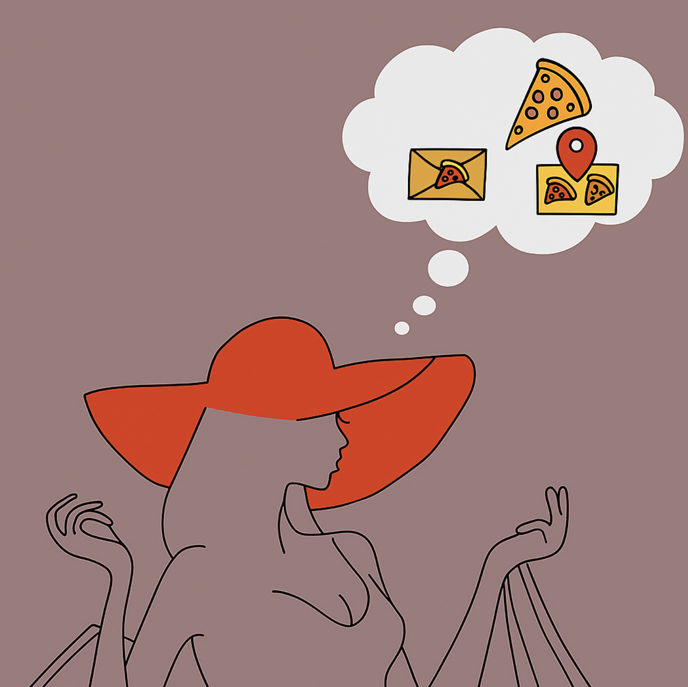

Sulten NU?
Du kender det selv, du er ude og shoppe, armene er fulde af poser, og energien begynder at dale. Efter et par timer begynder maven at rumle, og det store spørgsmål melder sig: Hvor skal jeg tage hen og spise? -Du er sulten, ikke bare lidt men hangry. Find blot løsningen med et enkelt klik nedenunder.
Se mere